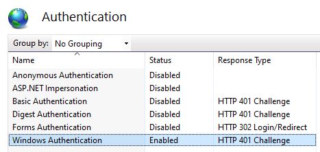
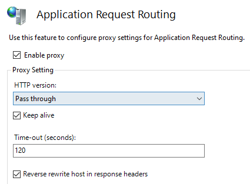

Secure Host Access
K2s provides three addons which can be used to expose the functionality implemented inside the Kubernetes cluster outside of it: ingress nginx, ingress traefik.
However, because the whole K2s solution relies on a private network, the exposed endpoints are only available inside this private network, running behind the Windows host - regardless which Hosting Variant is used.
In this document, we will assume you have enabled the K2s addon dashboard, so it is usable on your local host at http://k2s.cluster.local/dashboard/, and we further more assume you have an own product configured in one of the K2s ingress, reachable locally under http://my-product.local.
If we want to expose the ingress / gateway endpoints outside of the Windows host in a secure manner, we need to configure a reverse proxy on the Windows host. The following picture shows this schematically for one of the variants:
We describe here two ways to do that: using the windows firewall and using IIS.
[Option 1] Using the Windows firewall
One way to expose the functionality outside of the Windows host is to use the Windows firewall. Use the Windows netsh command to create a port proxy that forwards external traffic to your ingress controller:
netsh interface portproxy add v4tov4 listenport=8443 listenaddress=YOUR-HOST-IP connectport=443 connectaddress=172.19.1.100
This command creates a tunnel that:
Listens on port 8443 (or choose another free port on your host) at address YOUR-HOST-IP (your host interface IP, in most cases your Ethernet adapter) and forwards traffic to port 443 at 172.19.1.100 (likely your ingress controller's service), by this the traffic will flow to the K8s cluster.
Result: External clients can now access your Kubernetes services by connecting to YOUR-HOST-IP:8443. The traffic flows through the Windows port proxy to your ingress controller, which then routes it to the appropriate service based on your ingress rules (hostname, path, etc.). This setup is commonly used in local development environments where the Kubernetes cluster runs on the host.
Please check out other helpfull commands regarding portproxy:
netsh interface portproxy show all - shows all port forwardings settings
netsh interface portproxy reset - cleans them all, for testing very usefull
[Option 2] Using IIS
Another way to expose the functionality outside of the Windows host is to use the Application Request Routing module for IIS and the URL Rewrite IIS Module to configure a reverse proxy to the services exposed by the K2s ingress or gateway addon.
Using the IIS will ease up integration in the site network environment regarding secure communication and user management, as the IIS can be configured for SSL using the existing host certificate and the NTLM authentication can be configured in IIS.
The example below shows again how to make the same two applications available outside your host over https, and this time also making sure that the user is authenticated against the local host (i.e. he would also be allowed to log in on your local host):
https://my-host.my-domain.com/dashboard->http://k2s.cluster.local/dashboard/https://my-host.my-domain.com/my-product->http://my-product.local
Follow these steps:
- Install the IIS Module URL Rewrite
- Install the IIS Module Application Request Routing
- In IIS Manager, navigate to your default site and select
bindingsin theActions paneon the right.
Activate SSL binding for your default site in IIS. You need a server certificate to do that.

- In IIS Manager, navigate to your default site and select
Authenticationin theIISsection of theFeatures View.
Enable Windows Authentication:

- In IIS Manager, select your computer (root node) and then select
Application Request Routing Cachein theIISsection of theFeatures View. Then selectServer Proxy Settings...in theActions pane, and enable the proxy:

Also activate the Reverse rewrite host in response headers.
- Finally, in IIS Manager, navigate to your default site again, select
URL Rewrite, and create your inbound and outbound rules. Alternatively, update the configuration file underC:\inetpub\wwwroot\web.configand restart the site in IIS.
The example below shows how to forward requests to two different ingress endpoints, one of them being the K2s dashboard also used in the previous section.
<?xml version="1.0" encoding="UTF-8"?>
<configuration>
<system.webServer>
<rewrite>
<rules>
<rule name="k2s-dashboard" stopProcessing="true">
<match url="^dashboard/?(.*)" />
<serverVariables>
<set name="HTTP_ACCEPT_ENCODING" value="" />
</serverVariables>
<action type="Rewrite" url="http://k2s.cluster.local/dashboard/{R:1}" logRewrittenUrl="true" />
</rule>
<rule name="my-product" stopProcessing="true">
<match url="^my-product/?(.*)" />
<action type="Rewrite" url="http://my-product.local/{R:1}" logRewrittenUrl="true" />
</rule>
</rules>
<outboundRules>
<rule name="my-product-out" preCondition="isHTML" stopProcessing="true">
<match filterByTags="Base" pattern="^/?(.*)$" negate="false" />
<action type="Rewrite" value="/my-product/{R:1}" />
<conditions>
<add input="{URL}" pattern="/my-product.*" />
</conditions>
</rule>
<preConditions>
<remove name="isHTTP" />
<preCondition name="isHTML">
<add input="{RESPONSE_CONTENT_TYPE}" pattern="^text/html" />
</preCondition>
</preConditions>
</outboundRules>
</rewrite>
<security>
<authentication>
<windowsAuthentication enabled="true" />
</authentication>
</security>
</system.webServer>
</configuration>
Open Point
It seems that IIS Application Request Routing has an issue with URLs ending with a space character (as this is forbidden) - although NGINX is tolerant with this.
The dashboard web application makes calls to APIs, and in many of them the namespace is used as REST API resource ID, e.g. all Pods of namespace kubernetes-dashboard are retrieved with this API call:
http://k2s.cluster.local/dashboard/api/v1/pod/kubernetes-dashboard?query=value&...
But when the user selects All Namespaces in the User Interface, the same URL is invoked with a space character (%20) as the name of the resource - it seems as this is the convention the developers of the Dashboard made:
http://k2s.cluster.local/dashboard/api/v1/pod/%20?query=value&...
The HTTP specs forbid to have a space at the end on an URL, but it works for some reasons. However, when the rewrite rules kick in, it seems they drop the space and the application is not working with All Namespaces selected.
This line in the Kubernetes dashboard sources is causing the issue (the space character):
return this.namespace_.isMultiNamespace(currentNamespace) ? ' ' : currentNamespace;
Base href
When configuring reverse proxies, special attention and test effort must be spent to ensure that URLs are properly handled, in case they are pointing to the services being re-directed to.
In our example above, the my-product.local app makes several calls to APIs using relative URLs.
The app is designed to work e.g. at my-product.local/, and encodes the <base href="/">.
But when the application is accessed through the secure URL at e.g. my-host.my-domain.com/my-product, the base URL must be rewritten to <base href="/my-product/">.
This is solved for my-product by outbound rules, which inspects the responses and make the necessary changes for the <base href.../>.
For the dashboard, no change is necessary, because it detects and sets the base href dynamically, see the code.